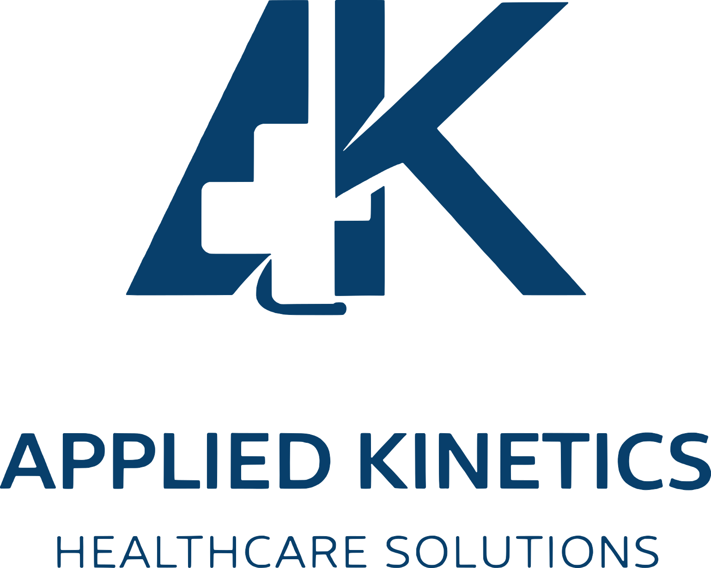
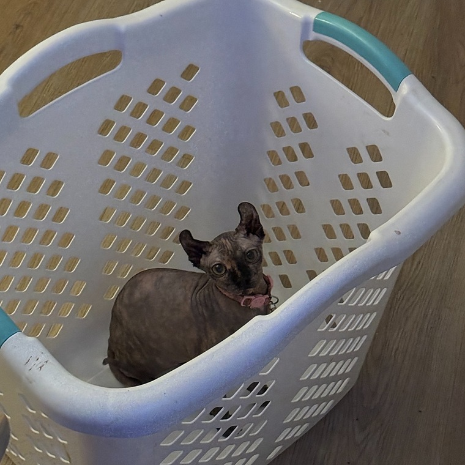

About
Applied Kinetics Healthcare Solutions
I started Applied Kinetics Healthcare Solutions to turn that same habit into something useful: practical, efficient tools for the recurring problems clinicians and healthcare systems keep tripping over.
The idea is to attack those problems from inside the workflow, with the perspective of someone who actually does the work, and use technology to remove friction instead of adding another login, another dashboard, and a 47-slide implementation meeting.

Why I built this
I wanted University Campus nurses to have a simple way to check the September retro payment without decoding dozens of Workday lines or learning payroll math as an unwanted side quest.
The checker was built from the wage scale, contract language, and line-by-line reconstruction of complete real retro statements. It is intentionally conservative: when something is not understood well enough, it should say so instead of guessing.
This is an independent community project. It is not an official UMass Memorial, MNA, or payroll tool.
How much has it been tested?
The core calculation has been checked against different real nurse pay histories, including Baylor and non-Baylor overtime, holidays, step changes, paid leave, and differentials. Less-common situations, especially on-call/callback, still need more real examples.

Scout
Scout has no payroll experience, no nursing credentials, and no recognizable place in the org chart. She joined the project by repeatedly occupying the keyboard and has since promoted herself to Executive QA without consulting anyone.
Mostly conducted by sitting on it
Usually unscheduled
Conflict noted
Industry-leading
Immediate escalation
Self-granted